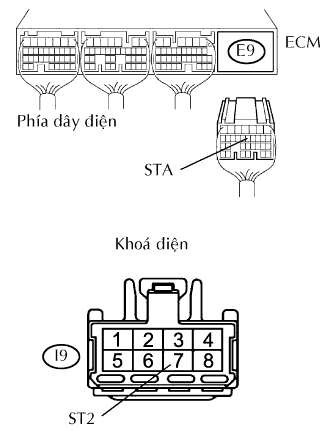
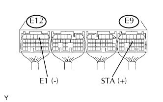

HỆ THỐNG SFI > Mạch Tín Hiệu Máy Đề |
| 1.ĐỌC DANH SÁCH DỮ LIỆU (TÍN HIỆU STA) |
Nối máy chẩn đoán với giắc DLC3.
Bật khóa điện đến vị trí ON và bật máy chẩn đoán ON.
Vào các menu sau: Powertrain / Engine and ECT / Data List / Starter Signal.
Kiểm tra kết quả khi khoá điện được bật đến ON và START.
| Vị trí khóa điện | Tín hiệu STA |
| ON | OFF |
| START | ON |
|
| ||||
| NG | |
| 2.KIỂM TRA DÂY ĐIỆN (ECM - KHOÁ ĐIỆN) |
|  |
Ngắt giắc nối E9 của ECM.
Ngắt giắc nối I9 của khóa điện.
Đo điện trở của các giắc nối phía dây điện.
| Nối dụng cụ đo | Điều kiện tiêu chuẩn |
| E9-12 (STA) - I9-7 (ST2) | Dưới 1 Ω |
| E9-12 (STA) hay I9-7 (ST2) - Mát thân xe | 10 kΩ trở lên |
|
| ||||
| OK | ||
| ||
| 1.KIỂM TRA ECM (ĐIỆN ÁP STA) |
|  |
Bật khoá điện ON.
Đo điện áp của các giắc nối ECM.
| Nối dụng cụ đo | Điều kiện tiêu chuẩn |
| E9-12 (STA) - E12-3 (E1) | 0 V |
Hãy đo điện áp của các giắc ECM khi động cơ đang được quay khởi động.
| Nối dụng cụ đo | Điều kiện tiêu chuẩn |
| E9-12 (STA) - E12-3 (E1) | 6 V trở lên |
|
| ||||
| NG | |
| 2.KIỂM TRA DÂY ĐIỆN (ECM - KHOÁ ĐIỆN) |
Ngắt giắc nối E9 của ECM.
Ngắt giắc nối I9 của khóa điện.
Đo điện trở của các giắc nối phía dây điện.
| Nối dụng cụ đo | Điều kiện tiêu chuẩn |
| E9-12 (STA) - I9-7 (ST2) | Dưới 1 Ω |
| E9-12 (STA) hay I9-7 (ST2) - Mát thân xe | 10 kΩ trở lên |
|
| ||||
| OK | ||
| ||